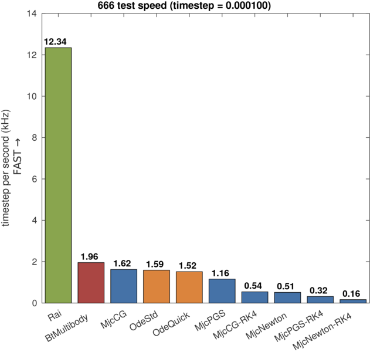
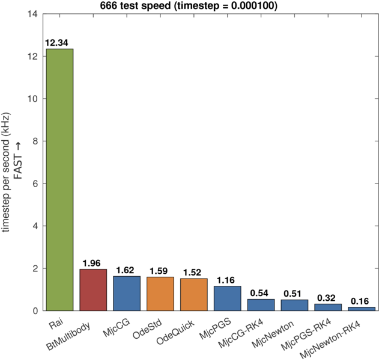

666 test

Test scenario
- Perfectly inelastic collision (restitutional coefficient = 0)
- Zero friction
- 6 x 6 x 6 number of 10 kg spheres
- Small perturbation in position to collapse
- Metric: pairwise penetration of objects
Tested solver list
- Rai
- Bisection solver (Rai solver)
- Bullet
- ODE
- MuJoCo
Dart[1]
Commentary
-
[1] Dart simulation fails in this test. The solver terminates with segmentation fault error.
Results
The accuracy-speed plot and speed bar graph of 666 test are as follows:
 

MuJoCo cannot specify restitution coefficient. There's uncontrollable bouncy behavior as the following video.